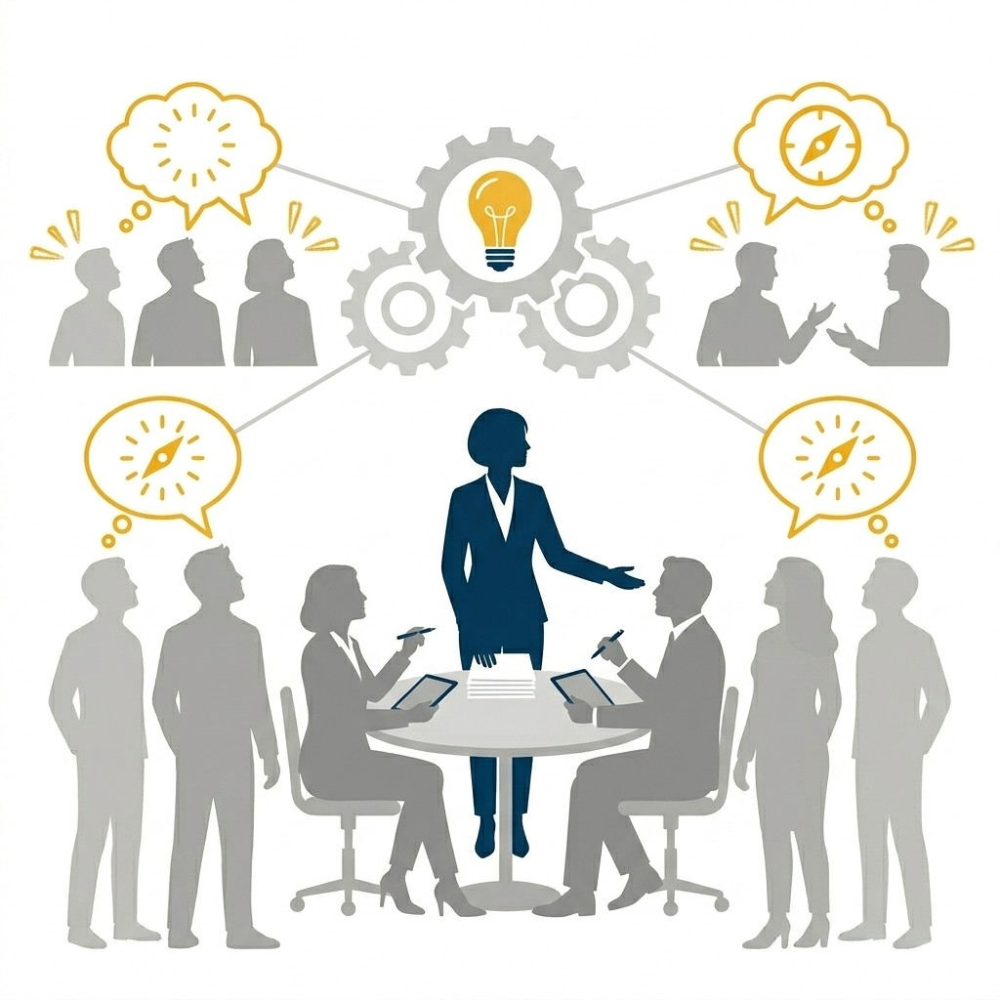

Decision-Making Style
Every leadership style produces a distinct way of making decisions. Here is how the Democratic style decides.

Add image URL to srcDecision-Making Style
The team decides together, guided by open discussion and consensus.
Next: see what this sounds like in a real moment →
Decision-Making in Practice
What a Democratic decision actually sounds like when it lands on a team.
"Let's discuss this as a team. Your input matters, and we'll reach a consensus."
Listen for
Notice input is invited before any direction is set. The goal is a decision the whole team can own, not just follow.
The Ripple Effect
Every decision sends a signal. Here is how the Democratic style ripples out across the team.
One decision, many voices
Creativity
Can lead to creative and diverse solutions from the team.
Time
Discussion and consensus-building can be time-consuming.
Momentum
May result in decision paralysis when consensus is hard to reach.
Reflection
Take a moment with this before moving on.
Compile a list of strategies a leader can employ to facilitate progress when the team encounters decision paralysis.